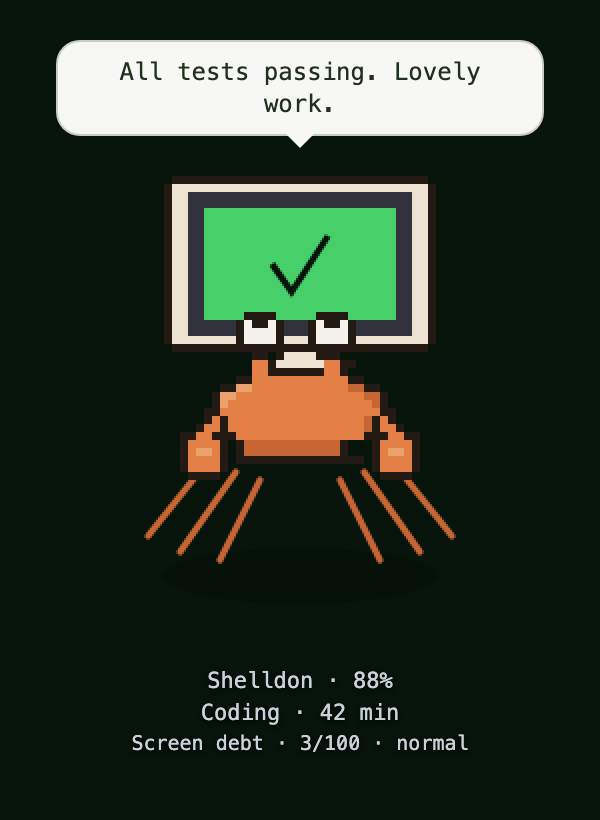
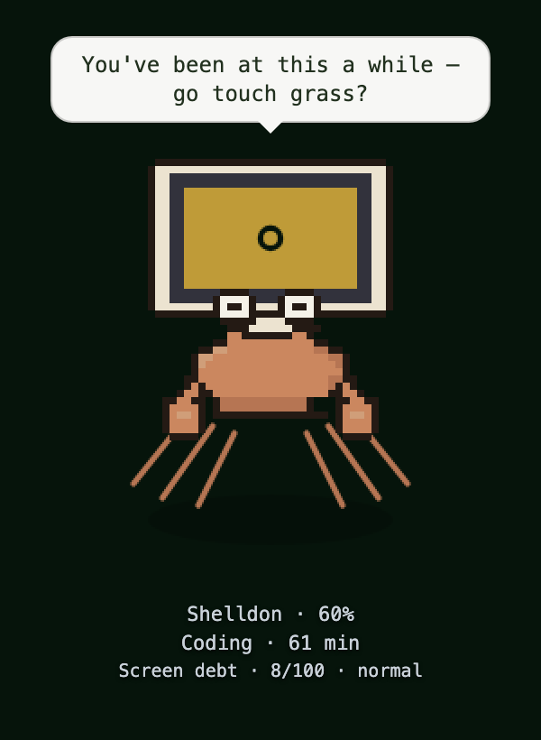
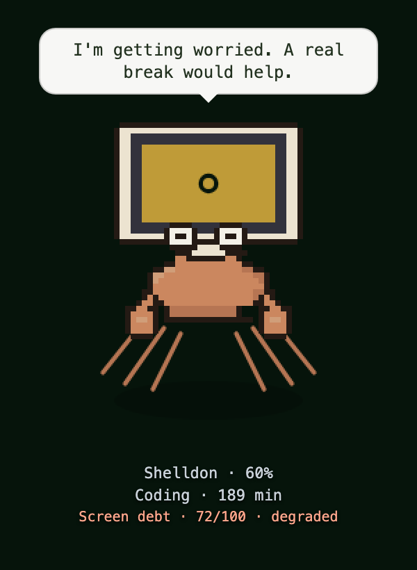
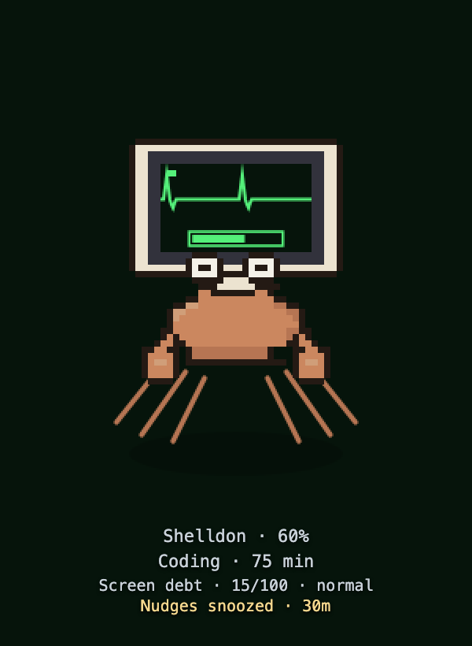

I built a desktop pet that grows when I work out and tells me to touch grass when I code too long.
Shelldon is a pixel hermit crab with a computer monitor for a shell. He hatches from an egg, and his monitor upgrades as he grows. He sits in a small window on top of my editor. My Garmin workouts make him grow. If I've been coding with Claude Code or Cline for an hour straight, he tells me to go outside.
v0.1 · install from source · window only tried on macOS · Node 23.6+ · MIT

What he does
He runs on your training
FitPet reads your Garmin training load for the last 7 days. When you've been training he's bright orange and the heartbeat on his screen runs fast. If a sync shows a quiet week he goes grey and slumps, and if it stays quiet his screen goes to standby. Keep it up and his shell upgrades: egg, chunky mono CRT, colour monitor, flat panel.
He notices long sessions
Hooks from Claude Code and Cline tell him when you're working. Gaps under 15 minutes count as one session. At 60 minutes (by default) he says something like You've been at this a while — go touch grass?
In Claude Code he also reacts when tests pass or fail, with a speech bubble and a green or red flash on his screen. Now and then he reacts to an edit. From Cline he gets activity events for the timer, nudge and score, but no coding-event reactions.
He keeps score
Screen debt runs from 0 to 100. Long sessions push it up. Breaks, workouts and outdoor time you log yourself pay it down. On the default setting, he brings it up at 35, 60 and 80.

Nudge at 61 minutes

Screen debt 72/100

Snoozed for 30 minutes
Why I made it
I'm a student at Berkeley and I do triathlon. Most of my coding happens with an agent running next to me now, and it's easy to look up and realize it's been three hours. Claude Code used to have a little /buddy pet. I missed it, so I made my own and gave it a reason to care whether I'd been outside.
The nagging part
When I posted this on r/SideProject, someone said that by the third touch grass reminder they'd be looking for a mute button. Fair.
You can snooze him from the terminal with node src/cli.ts snooze 30, and pick how pushy he is with node src/cli.ts nag gentle.
Setting
First nudge
Repeats
Debt bubbles at
Gentle
90 min
never
60, 80
Normal (default)
60 min
never
35, 60, 80
Persistent
45 min
every 30 min
35, 60, 80
Snoozing hides the touch-grass and debt reminders, not ordinary test, edit or fitness reactions. The debt keeps counting.
How the score works
The first 30 minutes of a session are free. After that it's a quarter point a minute, then half a point a minute once you pass an hour, so about two straight hours gets you to 35.
Once you've been away 15 minutes you earn back half a point a minute, up to 15 per break. A Garmin workout, or outdoor time you log with node src/cli.ts outdoor 20, pays back a point a minute, up to 40.
I picked these numbers. They aren't medical advice, and they're all in src/config.ts if you want different ones. The score comes from hook events, not real screen time.
By default, FitPet stores its data in ~/.fitpet on your computer. FitPet's scoring and storage are local. When a hook fires, FitPet writes down what kind of event it was and the time. Not your prompts, file paths, commands or output. The Cline hook only listens and always tells Cline to keep going. The speech bubbles are canned lines, with no model calls.
The one catch is Garmin. Sync runs as a Claude Code skill that calls a Garmin MCP server, so your recent activities pass through that Claude session on the way in. After that the math is local.
This page has no analytics and no cookies.
Before you clone it
It's v0.1 and still rough. There's nothing to download yet: you clone the repo and run it with npm, and you need Node 23.6 or newer. I've only run the window on my Mac. The tests run on Linux in CI, but I haven't tried the app there or on Windows, and the Cline hook installer needs a POSIX shell.
Garmin sync needs a Garmin and a Garmin MCP server registered as garmin in Claude Code. Screen debt comes from hook events, so it misses coding you do without an agent and counts an agent that keeps going after you walk away.
Feature
Claude Code
Cline (VS Code or CLI)
Session timer, touch-grass nudge, screen debt
Yes
Yes — experimental, not tested on a live install yet
Speech bubbles for tests, errors, some edits
Yes
No
Garmin sync (/fitpet-sync)
Yes
No, it's a Claude Code skill
Ages and grows between syncs
Yes, through hooks
No
Setup
node src/cli.ts install
cline-install once per project folder; enable Hooks in Cline's VS Code settings; see the README
Try it
git clone https://github.com/victory-c/fitpet.git ~/fitpet && cd ~/fitpet
npm install # deps + the Electron binary
node src/cli.ts reset --name Shelldon # start a fresh egg
npm run app:dev # open the companion window
node src/cli.ts install # add the coding-event hooks to ~/.claude/settings.json
# → restart Claude Code so the hooks load
npm run app:dev keeps running, so do the install step in a second terminal.
install backs up an existing settings.json, merges the hooks, and copies the /fitpet-sync skill into ~/.claude/skills. Preview it with node src/cli.ts install --print.
node src/cli.ts uninstall (run it from the same clone) removes the hooks. It doesn't touch your pet or the copied skill; delete ~/.claude/skills/fitpet-sync yourself if you want that gone too.
No Garmin? node src/cli.ts feed 60 hand-feeds a fake 60-minute workout, which is enough to hatch the egg.
I built most of the recent version with Cline, this page included. The first versions were built with Claude Code. Now I write a short spec, Cline plans it in Plan mode, I read the plan and push back, then it writes the code.